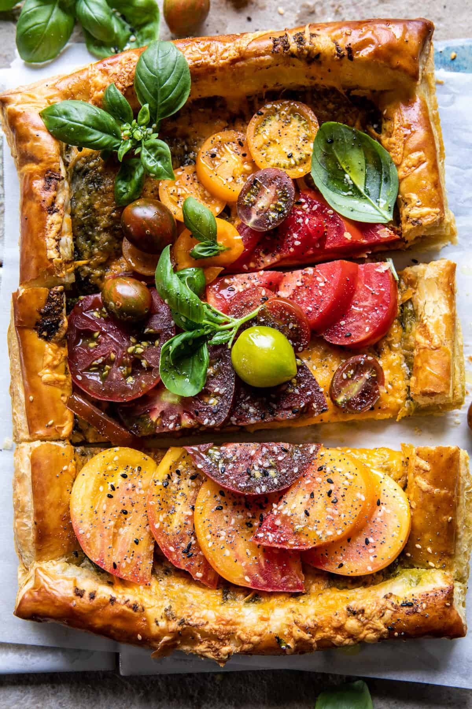

Heirloom Tomato Cheddar Tart

Description
This Heirloom Tomato Cheddar Tart with Everything Spice is the best way to enjoy summer tomatoes and garden fresh herbs. Flaky puff pastry dough topped with homemade basil pesto, melty cheddar cheese, and fresh tomatoes with a light sprinkling of everything spice. So simple and easy, a true summertime delight. Finish with fresh basil, then simply slice, eat, and enjoy!
Ingredients List
- 1 sheet frozen puff pastry thawed
- 1/3 cup basil pesto
- 1 1/2 cups shredded sharp cheddar cheese
- 4-6 heirloom tomatoes
- extra virgin olive oil, for drizzling
Recipe Instructions
- Preheat the oven to 425° F. Line a baking sheet with parchment paper.
- Lay the pastry on the prepared baking sheet and prick the pastry with a fork. Spread the pesto over the dough, leaving a 1/4-inch border, then top with cheddar. Bake for 25-30 minutes or until the pastry is golden and the cheese has melted.
- Remove from the oven and top the tart with tomatoes. Drizzle the tomatoes lightly with olive oil and sprinkle generously with everything bagel spice. Top with fresh basil. Slice and EAT!